<a href="https://github.com/hghalebi/reliable-ai-agents">
  <picture>
    <source media="(prefers-reduced-motion: reduce)" srcset="assets/production-ai-static.svg" />
    
  </picture>
</a>
<p><sub>Architecture illustration, not live telemetry. <a href="assets/production-ai-static.svg">View the static version.</a></sub></p>
